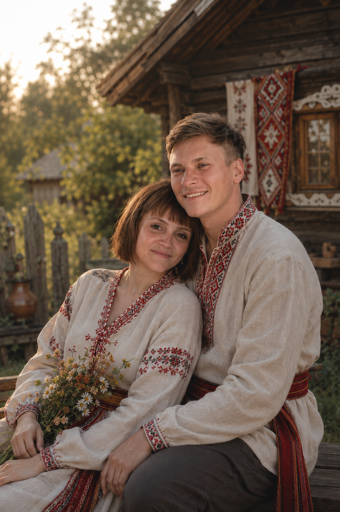
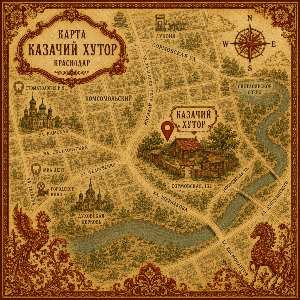

Приглашаем тебя на нашу свадьбу
Иван & Анна
Мы рады сообщить, что 21.08.2026 состоится самое главное событие в нашей жизни — день нашей свадьбы! Приглашаем Вас разделить с нами радость этого незабываемого дня.
Сказ о любви верной
«В некотором царстве, в Краснодарском государстве, встретил добрый молодец Иван красну девицу Анну. И вспыхнула между ними любовь чистая, яко родниковая вода, да крепкая, яко столетний дуб. Долго ли, коротко ли, а решили они идти по жизни рука об руку, судьбы свои воедино связать да пир великий в честь сего учинить...»
До пира великого осталось:
дней
часов
минут
секунд

Где пир проходить будет
🏰 г. Краснодар, ул. Сормовская, 132
«Казачий Хутор»
Свадебное расписание
«Приятным подарком для нас вместо цветов будет бутылка вашего любимого вина, которую мы откроем на ближайшем празднике».
⚜️ Указ Царский ⚜️ Дабы столы ломились от явств, сообщите о своём прибытии до 15 июля
Карта пути-дорожки

Открыть маршрут в приложении:
☀️ В Яндекс Картах 🌍 В Google Maps